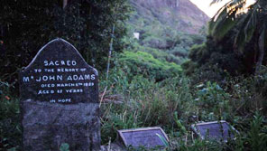

Adamstown and around
Explore the many hidden spots on the island
Browse over the map below and click on areas of interest

Around Adamstown
- The grave of John Adams
- 
- Known as the Patriarch of Pitcairn, John Adams outlived the other Bounty mutineers and played a key role in restoring stability to the community after its early period of bloodshed.
- Bounty Bay

- Bounty Bay is next to the ship's landing point, where you first arrive in Pitcairn.
- Mrs Turpin on Tedside
- A Galapagos tortoise was left on the island in the early 20th century, and now lives in Tedside on the northwest shore of the island.
- Flatland
- A smaller plateau at the upper extent of Adamstown, with a tennis court, volleyball, and picnic facilities. Crack of the cricket bat links the isle to England. Smooth and level ground is hard to find on Pitcairn, so the cricket pitch, set up on the lawn in front of the school building, is made of matting.
- Fletcher Christian's cave
- past the school and further up, is where the lead mutineer is said to have watched for approaching ships and hid from his ruthless fellow settlers when necessary. It's not an easy hike but well worth it
- The remains of the HMS Bounty
- The remains of the ship lie in just three metres of water below Bounty Bay, where it was burned by the mutineers in 1790. Tourists can dive onto it. Another wreck, the SS Cornwallis, can also be explored.
- Taro Ground radio station

- in the south of Pitcairn is the largest flat area on the island and site of the island's traditional link to the outside world: its ham radio station.
- Highest Point

- is the... highest point on the island, at 337 m.
- Garnet's Ridge
- at 300m one of the highest parts of the island, it is a great walk with steep cliffs on each side to see panoramic views of the island to both the west and east and of Adamstown.
- Gudgeon
- is a sea-level cave on the southwest side of the island, which hides a sandy beach in a large wide space carved by the waves. It is a valuable sand resource for Pitcairners.